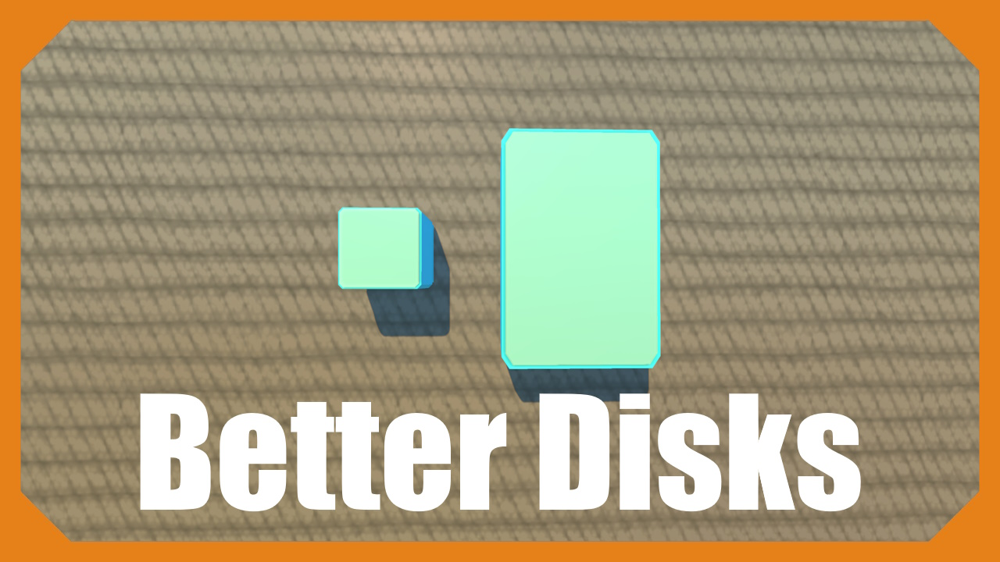
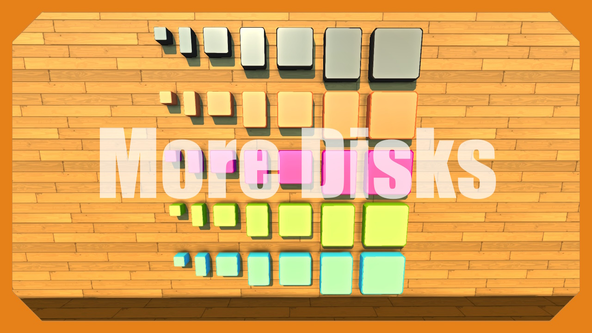

SComputers - Addon List
Controllers

Last update: Smart Controllers!
[EN]
This is my first experience with such mods, if you have any problems, be sure to write about them in the comments! Thanks! If you liked the addon, please rate it with a like.
Controllers (SComputers addon) - is a small addon for the SComputers mod [FORK], which will allow you to implement any mechanisms using programmable controllers that allow you to change the rotation angles of each bearing, and even the length of the connected pistons!
[RU]
Это мой первый опыт в создании модов, если у вас возникнут проблемы - обязательно пишите о них в комментариях! Спасибо.
Controllers (дополнение для SComputers) - небольшой аддон для мода SComputers [FORK], который позволит вам реализовать любые механизмы с помощью программируемых контроллеров, позволяющих изменять углы поворотов каждого подшипника, и даже длину подключенных поршней! Если вам понравилось дополнение, пожалуйста, оцените его лайком.
power toys
[Eng]
SComputers power toys is an add-on for SComputers that adds various unbalanced items to the game.
[Rus]
SComputers power toys - это дополнение для SComputers, которые добавляет в игру различные имбалансные предметы.
stretchable display

allows you to create displays of any size and resolution right inside the game.
more displays
more displays for SComputers. there is a wide range of aspect ratios and resolutions from 80x60 to 4k 21x9
world disks

saves data to the world and not to a block.
this approach allows you to save much more data.
files are saved after re-entering the world, but if you move the creation to another world, there will be a different set of files.
however, within the same world, you can save your creation to blueprint and load it from blueprint, everything will be fine in the files.
only the UUID of the file system that is stored inside the world is stored inside the block itself.
if you try to spawn two disks with the same UUID from the same blueprint, then all subsequent disks will change their UUID to a random one and copy the file system to a new UUID to avoid disk conflict.
however, you will not be able to use these disks to transfer files through the workshop.
better disks
these disks do not store data in a block, but in the BetterFS directory using betterAPI requires a betterAPI version of at least 59
More Disks

Adds more disk and ROM disk variations
More Motors
Adds more motors and creative motors variations. Also have it's own new commands!
online boombox

This radio runs on betterAPI and can play music via a direct link.
unfortunately, you cannot insert a link from youtube or something like that here,
but you can place your .mp3/.wav file on any hosting (for example, github) and insert a direct (raw) link to the file.
direct links to streaming Internet radio stations will also work (however, connecting to a streaming radio station can take a long time and not the first time).
minimap component

this is an addon for the minimap in SComputers!
in fact, this is a camera with an additional API.
It also supports waypoints.
survival crafting is also supported.
supports isometric rendering
capture mod
allows you to capture an image from your real monitor or game and stream it to other players via SComputers. requires a betterAPI version of at least 44. the mod is safe as betterAPI requires capture confirmation from the user.
brainf_ck language
this addon for SComputers adds a computer running on the brainf*ck programming language! the "." operator outputs values to the bf_output register and to the logPrint. the "," operator takes values from the bf_input register, if there is none, then from the first input connected to the computer. a computer can execute up to 100000 brainf*ck instructions in one tick. to complete the execution in this tick, use the "," operator while reading input, the computer does nothing else and waits for the next tick. to interact with the rest of the peripheral, use lua-invoke. to do this, output the lua-invoke as a string in "." it should start with byte 1 and end with byte 0. there is a special python script in the mod files for automatic lua-invoke generation: Scripts/examples/luaInvokeGenerator.py for luaInvokeGenerator.py to work, when calling lua-invoke, the selected memory location must have a value of 0. after completing lua-invoke, 0 will remain in this cell. lua-invoke gets the brainf*ck memory table as the first argument, which is indexed from 0. this allows data exchange between lua and brainf*ck. please do not write anything there except integers from 0 to 255, as this will lead to UB if you run a ready-made program on brainf*ck, it will output its result to the computer console and chat. and accept input from the bf_input register, or if there is none, then from the first connected input. if you do not need output to the chat, then you can implement your output function using lua-invoke or disable output to the chat in the mod's Permission Tool (in this case, output will continue to bf_output and to the computer console)
MT Fast Logic
Fast Logic With great optimization, comes great speed. Fast logic provides significant acceleration compared to vanilla logic gates and makes the use of logic for practical purposes much more viable.
scmframework demo

this mod demonstrates the capabilities of scmframework the scmframework allows you to use SComputers features inside your mods it's completely free and anyone can use the scmframework to create their own mods if you only need displays from SComputers, then you can use canvasAPI the scmframework contains canvasAPI inside itself
NES Emulator
this mod allows you to emulate your favorite games from the NES platform right inside Scrap Mechanic! this is a real emulator running inside the game, you can even connect a second controller and play with your friends! just connect the console to the display and the joysticks to the console. insert the cartridge and play the NES right inside Scrap Mechanic! unfortunately, due to the restricted API of the game, when pressing several buttons in the joystick GUI, bugs sometimes occur and other buttons are released. if you install betterAPI, the button processing works fine, otherwise it is better to connect the controller with the seat. you can connect the joystick to the seat to control the game from it. to import other control buttons, use the "Control Import" unit and connect it to the joystick. to upload your games, there is a "flash cartridge" that requires betterAPI. press 0 on the joystick to open the folder where you can to add games (host only). to emulate sound, there is a "speaker" block. betterAPI is needed for its operation.